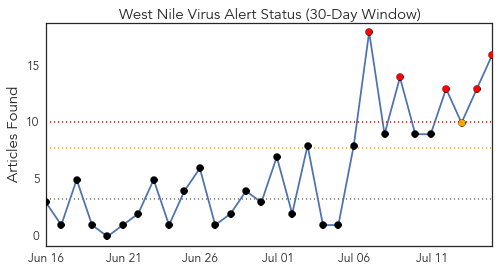
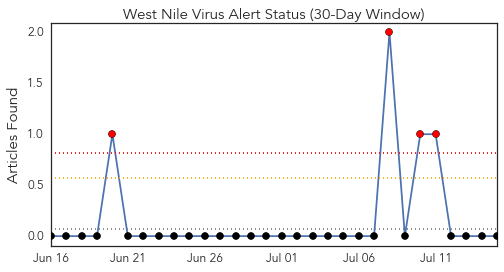
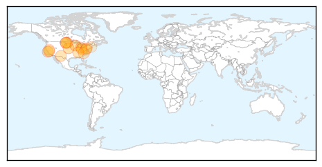
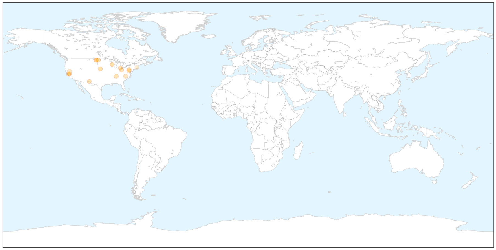

West Nile Virus
30-Day Web Trend
5 alerts, 1 warnings

30-Day Twitter Trend
0 alerts, 0 warnings

Article Locations

X

Article Confidences

Top Articles:
- 0.994
- West Nile virus found in Platte County
- 0.993
- West Nile Virus on the rise
- 0.986
- West Nile Virus found in Racine County
- 0.967
- No West Nile found in latest mosquito tests in Rhode Island
- 0.957
- First Case of West Nile Virus Confirmed in ND
- 0.907
- Officials urge caution after positive test for West Nile
- 0.891
- Untitled Article
- 0.883
- Mosquitoes in Toledo test positive for West Nile
- 0.879
- Weld County health officials: West Nile virus found in mosquitoes
- 0.860
- Tennessee Department of Health urges public to protect themselves from Tick and Mosquito Bites
- 0.858
- El Paso prepares for a heavy mosquito season
- 0.785
- First human case of West Nile for 2015 reported in ND
- 0.721
- State urges vaccinations after horse dies of EEE in Cumberland County
- 0.697
- How many mosquitoes in Adams County have tested positive for West Nile?
- 0.626
- Nevada County health officer: Potential West Nile Virus case suspected
- 0.511
- Health Department to start weekly mosquito testing
Top Tweets:
-
No tweets found for Jul 15, 2015